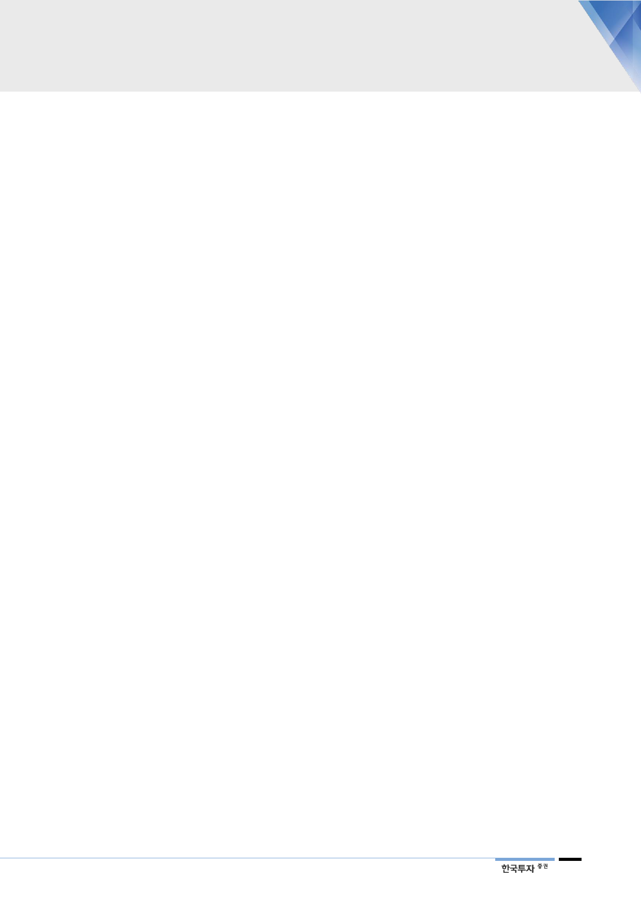

에너지 전환의 초기
불확실성 확대
장기 방향성 바뀌더라도
단기 성과 내기는 어려움
탈원전 정책에 대한
불협화음 끊이지 않음
결국 피해는 한국전력의
주주에게 올 것이라 우려
2. 아직은 과도기, 험난한 탈원전의 길
정부의 에너지 전환에 대한 방향성은 비교적 분명해졌다. 탈원전과 재생에너지
확대는 대선부터 강조해온 공약이다. 원전의 위험성에 대한 대응책을 마련하고
환경오염의 주범인 화석연료 의존도를 낮추는 당위성은 이미 사회적으로 공감받
고 있다. 전원구성에 경제성뿐만 아니라 환경과 안전을 함께 고려하는 원칙도
2015년 세워진 7차 전력수급계획에서 이미 제시된 바 있다. 다만 문제는 아직
원전에 대한 대안이 마땅치 않은 과도기에서 다소 급진적이었던 변화의 속도다.
초기 정책수립 과정에서 빚어진 혼선은 유틸리티 업종의 불확실성을 키웠다.
유틸리티 산업은 공공성이 크고 대규모 투자를 수반하기 때문에 태생적으로 정부
가 주도한다. 하지만 설비투자에 걸리는 시간이 길어 임기 중에 가시적인 변화를
만들기 어렵다. 현 정부는 탈원전을 강조하지만 기저발전의 비중은 과거 정권에
서 내려진 결정에 따라 2023년까지 오히려 상승한다. LNG와 재생에너지 확대는
임기 이후가 된다. 단기 성과를 보여주려면 진행중인 계획을 수정해야 되는데, 매
몰비용과 정책 혼란 등을 감안하면 이 또한 쉽지 않다.
정부는 이미 신고리 5·6호기 건설중단 공약에서 한 발 물러섰다. 약 30%에 달
했던 공정률이 발목을 잡았다. 이 과정에서 대중이 참여한 공론화위원회가 공사
재개 결정을 내리기까지 불필요한 논란이 이어졌다. 월성 1호기 조기폐로 역시
수명연장을 위해 이미 투입된 수천억원의 매몰비용 때문에 반대여론을 무시하기
어려운 상황이다. 계획예방정비 일정이 하염없이 지연되면서 원전이용률은 1분기
50%대로 떨어졌다. 여기에 한전이 영국 무어사이드 원전 우선협상대상자 지위를
상실하면서, 탈원전 정책이 원전 수출의 앞길을 가로막을 것이란 우려가 커졌다.
이 과정에서 한전은 2017년 감익구간에 접어들었다. 석탄과 LNG 가격이 오르는
데 발전단가가 가장 낮은 원전은 안전점검 강화로 정상적인 가동에 어려움을 겪
고 있다. 한전의 2017년 영업이익은 전년대비 59% 급감했고 올해는 적자를 기
록할 전망이다. 하지만 정부는 물가 상승과 탈원전에 대한 반대여론을 우려하고
있어 전기요금 인상에 소극적인 모습이다. 최근 에너지경제연구원과 딜로이트에
서 발표한 ‘원전 산업 생태계 개선 방안’에 따르면, 해외 원전의 추가 수주 없이
는 현재 38,800명 수준인 원전산업의 인력은 2023년부터 감소해 2030년에는
3만명을 하회할 전망이다. 사업 영속성이 불확실해진 원전업체들의 이탈이 구체
화될 경우 산업 생태계가 붕괴될 수 있다는 지적이 마냥 과장되어 보이지만은 않
는다. 실적의 가시성이 낮아지고 정부가 생각하는 우선순위에서 뒤로 밀리고 있
어 한전의 투자매력이 낮아졌다.
13